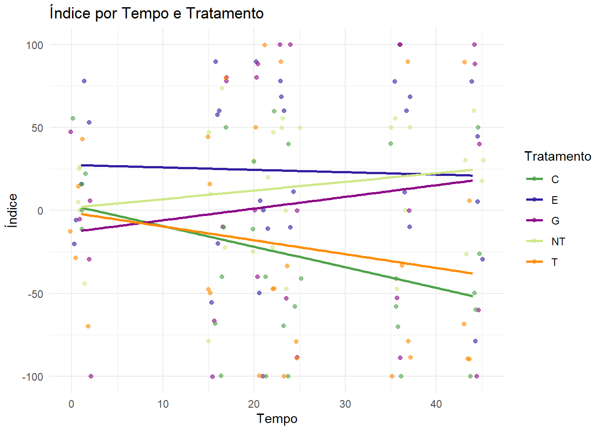
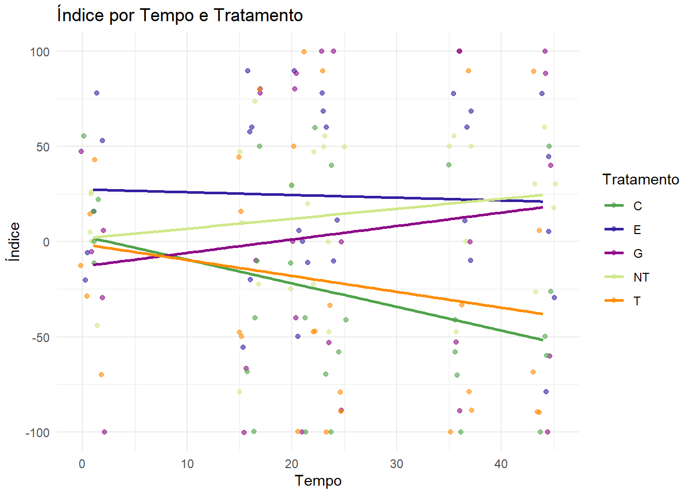
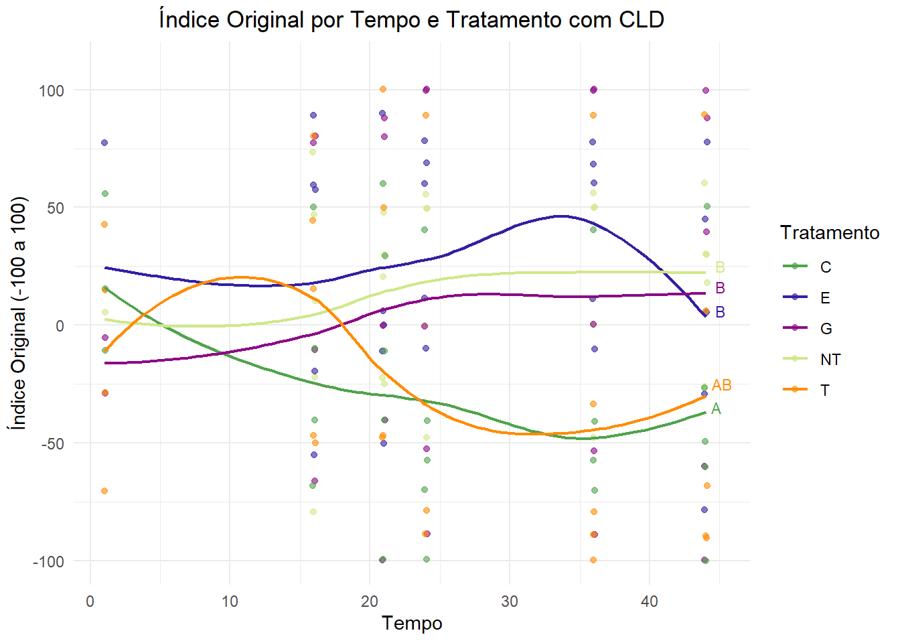

Carregando pacotes exigidos: ggplot2Warning: pacote 'ggplot2' foi compilado no R versão 4.4.3`geom_smooth()` using formula = 'y ~ x'
Índice de repelência é uma medida utilizada para avaliar a eficácia de um tratamento ou substância em repelir insetos ou outros organismos. Ele é geralmente aplicado em estudos de controle de pragas ou experimentos ecológicos.
A fórmula mais comum para calcular o índice de repelência é baseada na comparação entre o número de indivíduos (geralmente insetos) encontrados nas áreas tratadas e nas áreas não tratadas.
A fórmula clássica para calcular o índice de repelência (IR) é:
Onde:
N cont: número de insetos encontrados na área não tratada (controle).
N trat: número de insetos encontrados na área tratada.
IR = 0: Não há repelência, ou seja, o número de insetos nas áreas tratadas é igual ao das áreas de controle.
IR > 0: O tratamento tem algum grau de repelência, pois o número de insetos na área tratada é menor que na área de controle.
IR < 0: O tratamento pode ter um efeito atraente, ou seja, há mais insetos nas áreas tratadas do que nas áreas de controle.
A adequação da pontuação utilizada nos dados é importante para o reconhecimento dos tipos das mesmas pelo programa.
Carregando pacotes exigidos: ggplot2Warning: pacote 'ggplot2' foi compilado no R versão 4.4.3`geom_smooth()` using formula = 'y ~ x'
Devido a natureza dos dados, e a nossa intenção de análise dos efeitos do tempo e dos tratamentos sobre o índice de repelencia do estudo, organizamos um modelo de Análise de Covariância (ANCOVA).
Call:
lm(formula = indice ~ tempo + trat + tempo * trat, data = rep)
Residuals:
Min 1Q Median 3Q Max
-118.09 -42.85 -3.05 37.67 127.47
Coefficients:
Estimate Std. Error t value Pr(>|t|)
(Intercept) 2.9523 20.8170 0.142 0.8874
tempo -1.2404 0.7596 -1.633 0.1047
tratE 24.4558 29.4397 0.831 0.4076
tratG -15.8957 29.4397 -0.540 0.5901
tratNT -1.3612 29.4397 -0.046 0.9632
tratT -4.2961 29.4397 -0.146 0.8842
tempo:tratE 1.0970 1.0743 1.021 0.3089
tempo:tratG 1.9458 1.0743 1.811 0.0722 .
tempo:tratNT 1.7641 1.0743 1.642 0.1028
tempo:tratT 0.4074 1.0743 0.379 0.7051
---
Signif. codes: 0 '***' 0.001 '**' 0.01 '*' 0.05 '.' 0.1 ' ' 1
Residual standard error: 57.48 on 140 degrees of freedom
Multiple R-squared: 0.1394, Adjusted R-squared: 0.08407
F-statistic: 2.52 on 9 and 140 DF, p-value: 0.01049
Call:
lm(formula = indice ~ tempo + trat, data = rep)
Residuals:
Min 1Q Median 3Q Max
-108.23 -43.48 -10.15 41.30 120.53
Coefficients:
Estimate Std. Error t value Pr(>|t|)
(Intercept) -21.7284 13.2622 -1.638 0.103527
tempo -0.1976 0.3408 -0.580 0.563000
tratE 50.4177 14.8889 3.386 0.000914 ***
tratG 30.1543 14.8889 2.025 0.044685 *
tratNT 40.3883 14.8889 2.713 0.007489 **
tratT 5.3460 14.8889 0.359 0.720076
---
Signif. codes: 0 '***' 0.001 '**' 0.01 '*' 0.05 '.' 0.1 ' ' 1
Residual standard error: 57.66 on 144 degrees of freedom
Multiple R-squared: 0.1093, Adjusted R-squared: 0.07832
F-statistic: 3.532 on 5 and 144 DF, p-value: 0.004832O modelo sem interações se mostrou o ideal. O que significa que as variaveis de tempo e tratamento não apresentam interações significativas entre si.
Carregando pacotes exigidos: nortest
Lilliefors (Kolmogorov-Smirnov) normality test
data: residuals(mod)
D = 0.075537, p-value = 0.03585
Bartlett test of homogeneity of variances
data: indice by tempo
Bartlett's K-squared = 8.1281, df = 5, p-value = 0.1493
Bartlett test of homogeneity of variances
data: indice by trat
Bartlett's K-squared = 15.136, df = 4, p-value = 0.004427Como os resultados dos testes apontam que os dados não seguem os pressupostos estabelecidos para uma Análise de Covariância (normalidade de resíduos e homogeneidade de variâncias), optamos por seguir utilizando uma alternativa não paramétrica da ANCOVA.
Carregando pacotes exigidos: betaregWarning: pacote 'betareg' foi compilado no R versão 4.4.3Carregando pacotes exigidos: carWarning: pacote 'car' foi compilado no R versão 4.4.2Carregando pacotes exigidos: carData
Anexando pacote: 'car'O seguinte objeto é mascarado por 'package:dplyr':
recode Min. 1st Qu. Median Mean 3rd Qu. Max.
0.00015 0.25334 0.50000 0.49429 0.74995 0.99985 tempo trat rep indice indice_rescalado
1 1 NT 1 0.00 0.5000000
2 1 NT 2 26.32 0.6315737
3 1 NT 3 25.00 0.6249750
4 1 NT 4 5.26 0.5262947
5 1 NT 5 -44.44 0.2778444
6 1 E 1 77.78 0.8888222Warning in betareg.fit(X, Y, Z, weights, offset, link, link.phi, type, control,
: no valid starting value for precision parameter found, using 1 instead
Call:
betareg(formula = indice_rescalado ~ tempo + trat, data = rep_beta)
Quantile residuals:
Min 1Q Median 3Q Max
-2.8984 -0.3790 0.0332 0.4905 3.1644
Coefficients (mean model with logit link):
Estimate Std. Error z value Pr(>|z|)
(Intercept) -0.7545430 0.2818535 -2.677 0.00743 **
tempo 0.0004904 0.0072280 0.068 0.94590
tratE 1.0400253 0.3195729 3.254 0.00114 **
tratG 0.8975795 0.3185492 2.818 0.00484 **
tratNT 0.8831049 0.3184412 2.773 0.00555 **
tratT 0.3085924 0.3138172 0.983 0.32543
Phi coefficients (precision model with identity link):
Estimate Std. Error z value Pr(>|z|)
(phi) 1.2238 0.1152 10.63 <2e-16 ***
---
Signif. codes: 0 '***' 0.001 '**' 0.01 '*' 0.05 '.' 0.1 ' ' 1
Type of estimator: ML (maximum likelihood)
Log-likelihood: 34.65 on 7 Df
Pseudo R-squared: 0.07412
Number of iterations: 14 (BFGS) + 1 (Fisher scoring) Warning in Anova.default(modbeta, type = 2): there are coefficients in coef(mod)
that are not in the model matrix:
(phi)
tests may be incorrectWarning in Anova.default(modbeta, type = 2): there are rows/columns in vcov.
that are not in the model matrix:
(phi)
tests may be incorrectAnalysis of Deviance Table (Type II tests)
Response: indice_rescalado
Df Chisq Pr(>Chisq)
tempo 1 0.0046 0.945903
trat 4 15.4714 0.003817 **
---
Signif. codes: 0 '***' 0.001 '**' 0.01 '*' 0.05 '.' 0.1 ' ' 1A distribuição beta, do modelo de regressão linear generalizada, é o que melhor consegue descrever os dados. Isso está relacionado com o fato de ser eficaz para grupos de dados com limites inferior e superior (geralmente entre 0 e 1). Conseguimos utilizar esse modelo após transformarmos os nossos dados para se adequarem de forma proporcional nesse modelo.
Carregando pacotes exigidos: multcompWarning: pacote 'multcomp' foi compilado no R versão 4.4.3Carregando pacotes exigidos: mvtnormCarregando pacotes exigidos: survivalCarregando pacotes exigidos: TH.dataCarregando pacotes exigidos: MASS
Anexando pacote: 'MASS'O seguinte objeto é mascarado por 'package:dplyr':
select
Anexando pacote: 'TH.data'O seguinte objeto é mascarado por 'package:MASS':
geyserCarregando pacotes exigidos: emmeansWarning: pacote 'emmeans' foi compilado no R versão 4.4.3Welcome to emmeans.
Caution: You lose important information if you filter this package's results.
See '? untidy' trat emmean SE df asymp.LCL asymp.UCL
C 0.322 0.0489 Inf 0.226 0.418
E 0.574 0.0550 Inf 0.466 0.681
G 0.539 0.0559 Inf 0.429 0.648
NT 0.535 0.0559 Inf 0.425 0.645
T 0.393 0.0536 Inf 0.288 0.498
Confidence level used: 0.95 contrast estimate SE df z.ratio p.value
C - E -0.2514 0.0741 Inf -3.392 0.0062
C - G -0.2162 0.0745 Inf -2.901 0.0306
C - NT -0.2126 0.0746 Inf -2.852 0.0353
C - T -0.0707 0.0718 Inf -0.985 0.8621
E - G 0.0351 0.0783 Inf 0.449 0.9916
E - NT 0.0387 0.0783 Inf 0.495 0.9879
E - T 0.1806 0.0771 Inf 2.343 0.1315
G - NT 0.0036 0.0790 Inf 0.046 1.0000
G - T 0.1455 0.0776 Inf 1.875 0.3308
NT - T 0.1419 0.0776 Inf 1.828 0.3573
P value adjustment: tukey method for comparing a family of 5 estimates Note: adjust = "tukey" was changed to "sidak"
because "tukey" is only appropriate for one set of pairwise comparisons
--- Resultado do CLD (letras de agrupamento) --- trat emmean SE df asymp.LCL asymp.UCL .group
C 0.322 0.0489 Inf 0.197 0.448 A
T 0.393 0.0536 Inf 0.255 0.531 AB
NT 0.535 0.0559 Inf 0.391 0.679 B
G 0.539 0.0559 Inf 0.395 0.682 B
E 0.574 0.0550 Inf 0.433 0.715 B
Confidence level used: 0.95
Conf-level adjustment: sidak method for 5 estimates
P value adjustment: tukey method for comparing a family of 5 estimates
significance level used: alpha = 0.05
NOTE: If two or more means share the same grouping symbol,
then we cannot show them to be different.
But we also did not show them to be the same. Warning: Using `size` aesthetic for lines was deprecated in ggplot2 3.4.0.
ℹ Please use `linewidth` instead.`geom_smooth()` using method = 'loess'Warning: Removed 13 rows containing missing values or values outside the scale range
(`geom_point()`).
Ao visulalizar gráfico, é possível concluir que o tratamento “T” pode ter um efeito de repelência crescente ao longo do tempo, enquanto os tratamentos “C” e “E” parecem ter pouco ou nenhum efeito de repelência significativo. O tratamento “G” se comporta de forma intermediária. A análise sugere que o tempo pode ter um papel importante na eficácia do tratamento em repelir os insetos.